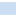

+
−
⇧
qgis2web
i
nama rumah bali
NAMA_JALAN
1
2
3
4
 5
DesaIndonesia
![]()